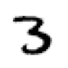
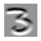
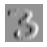
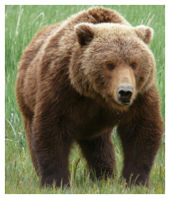
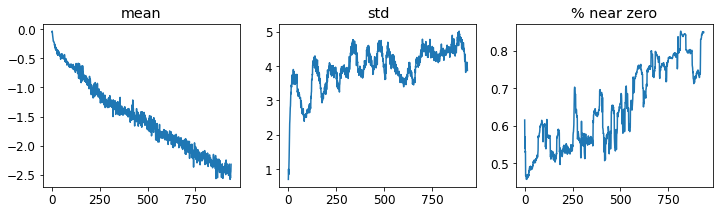
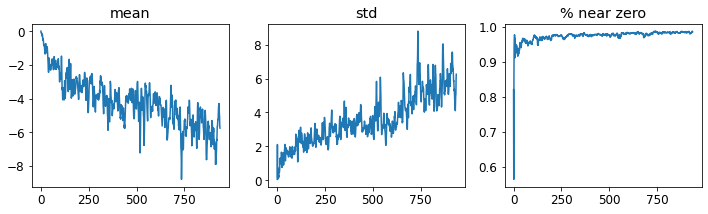
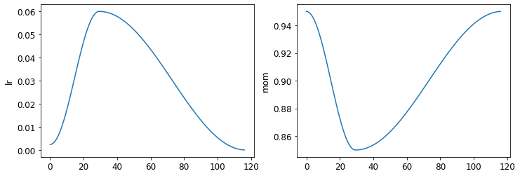
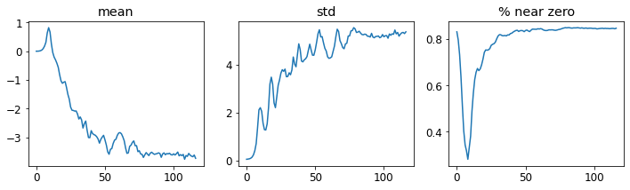
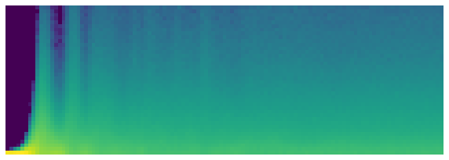
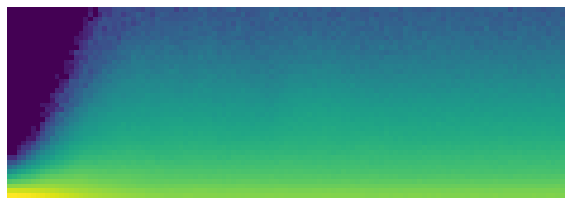

Notes on fastai Book Ch. 13
- The Magic of Convolutions
- Our First Convolutional Neural Network
- Improving Training Stability
- References
#hide
# !pip install -Uqq fastbook
import fastbook
fastbook.setup_book()#hide
from fastai.vision.all import *
from fastbook import *
matplotlib.rc('image', cmap='Greys')import inspect
def print_source(obj):
for line in inspect.getsource(obj).split("\n"):
print(line)Convolutional Neural Networks
The Magic of Convolutions
- feature engineering
- creating new transformations of the input data in order to make it easier to the model
- one of the most powerful tools machine learning practitioners have at their disposal
- a feature is a transformation of the data that is designed to make it easier to the model
Convolution
- applies a kernel across an image
- multiplies each element of an \(NxN\) size kernel by each element of an \(NxN\) block of an image and adds the results together
- kernel: a little matrix
A guide to convolution arithmetic for deep learning
- provides many great diagrams showing how image kernels can be applied
# A convolutional kernel that finds top edges (i.e. dark on bottom, light on top)
top_edge = tensor([[-1,-1,-1],
[ 0, 0, 0],
[ 1, 1, 1]]).float()path = untar_data(URLs.MNIST_SAMPLE)
pathPath('/home/innom-dt/.fastai/data/mnist_sample')im3 = Image.open(path/'train'/'3'/'12.png')
show_image(im3);
show_image<function fastai.torch_core.show_image(im, ax=None, figsize=None, title=None, ctx=None, cmap=None, norm=None, *, aspect=None, interpolation=None, alpha=None, vmin=None, vmax=None, origin=None, extent=None, interpolation_stage=None, filternorm=True, filterrad=4.0, resample=None, url=None, data=None, **kwargs)>print_source(show_image)@delegates(plt.Axes.imshow, keep=True, but=['shape', 'imlim'])
def show_image(im, ax=None, figsize=None, title=None, ctx=None, **kwargs):
"Show a PIL or PyTorch image on `ax`."
# Handle pytorch axis order
if hasattrs(im, ('data','cpu','permute')):
im = im.data.cpu()
if im.shape[0]<5: im=im.permute(1,2,0)
elif not isinstance(im,np.ndarray): im=array(im)
# Handle 1-channel images
if im.shape[-1]==1: im=im[...,0]
ax = ifnone(ax,ctx)
if figsize is None: figsize = (_fig_bounds(im.shape[0]), _fig_bounds(im.shape[1]))
if ax is None: _,ax = plt.subplots(figsize=figsize)
ax.imshow(im, **kwargs)
if title is not None: ax.set_title(title)
ax.axis('off')
return axim3_t = tensor(im3)
im3_t[0:3,0:3] * top_edgetensor([[-0., -0., -0.],
[0., 0., 0.],
[0., 0., 0.]])(im3_t[0:3,0:3] * top_edge).sum()tensor(0.)df = pd.DataFrame(im3_t[:10,:20])
df.style.set_properties(**{'font-size':'6pt'}).background_gradient('Greys')| 0 | 1 | 2 | 3 | 4 | 5 | 6 | 7 | 8 | 9 | 10 | 11 | 12 | 13 | 14 | 15 | 16 | 17 | 18 | 19 | |
|---|---|---|---|---|---|---|---|---|---|---|---|---|---|---|---|---|---|---|---|---|
| 0 | 0 | 0 | 0 | 0 | 0 | 0 | 0 | 0 | 0 | 0 | 0 | 0 | 0 | 0 | 0 | 0 | 0 | 0 | 0 | 0 |
| 1 | 0 | 0 | 0 | 0 | 0 | 0 | 0 | 0 | 0 | 0 | 0 | 0 | 0 | 0 | 0 | 0 | 0 | 0 | 0 | 0 |
| 2 | 0 | 0 | 0 | 0 | 0 | 0 | 0 | 0 | 0 | 0 | 0 | 0 | 0 | 0 | 0 | 0 | 0 | 0 | 0 | 0 |
| 3 | 0 | 0 | 0 | 0 | 0 | 0 | 0 | 0 | 0 | 0 | 0 | 0 | 0 | 0 | 0 | 0 | 0 | 0 | 0 | 0 |
| 4 | 0 | 0 | 0 | 0 | 0 | 0 | 0 | 0 | 0 | 0 | 0 | 0 | 0 | 0 | 0 | 0 | 0 | 0 | 0 | 0 |
| 5 | 0 | 0 | 0 | 12 | 99 | 91 | 142 | 155 | 246 | 182 | 155 | 155 | 155 | 155 | 131 | 52 | 0 | 0 | 0 | 0 |
| 6 | 0 | 0 | 0 | 138 | 254 | 254 | 254 | 254 | 254 | 254 | 254 | 254 | 254 | 254 | 254 | 252 | 210 | 122 | 33 | 0 |
| 7 | 0 | 0 | 0 | 220 | 254 | 254 | 254 | 235 | 189 | 189 | 189 | 189 | 150 | 189 | 205 | 254 | 254 | 254 | 75 | 0 |
| 8 | 0 | 0 | 0 | 35 | 74 | 35 | 35 | 25 | 0 | 0 | 0 | 0 | 0 | 0 | 13 | 224 | 254 | 254 | 153 | 0 |
| 9 | 0 | 0 | 0 | 0 | 0 | 0 | 0 | 0 | 0 | 0 | 0 | 0 | 0 | 0 | 90 | 254 | 254 | 247 | 53 | 0 |
df = pd.DataFrame(im3_t[4:7,6:9])
df.style.set_properties(**{'font-size':'6pt'}).background_gradient('Greys')| 0 | 1 | 2 | |
|---|---|---|---|
| 0 | 0 | 0 | 0 |
| 1 | 142 | 155 | 246 |
| 2 | 254 | 254 | 254 |
(im3_t[4:7,6:9] * top_edge).sum()tensor(762.)Note: Returns a high number because the \(3x3\) pixel square represents a top edge.
df = pd.DataFrame(im3_t[7:10,17:20])
df.style.set_properties(**{'font-size':'6pt'}).background_gradient('Greys')| 0 | 1 | 2 | |
|---|---|---|---|
| 0 | 254 | 75 | 0 |
| 1 | 254 | 153 | 0 |
| 2 | 247 | 53 | 0 |
(im3_t[7:10,17:20] * top_edge).sum()tensor(-29.)Note: Returns a low number because the \(3x3\) pixel square does not represent a top edge.
# Center coords of the 3x3 matrix will be (row,col)
def apply_kernel(row, col, kernel):
return (im3_t[row-1:row+2,col-1:col+2] * kernel).sum()apply_kernel(5,7,top_edge)tensor(762.)Mapping a Convolution Kernel
# Nested list comprehension to generate a list of coordinates
[[(i,j) for j in range(1,5)] for i in range(1,5)][[(1, 1), (1, 2), (1, 3), (1, 4)],
[(2, 1), (2, 2), (2, 3), (2, 4)],
[(3, 1), (3, 2), (3, 3), (3, 4)],
[(4, 1), (4, 2), (4, 3), (4, 4)]]rng = range(1,27)
# Map top edge kernel to the generated list of coordinates
top_edge3 = tensor([[apply_kernel(i,j,top_edge) for j in rng] for i in rng])
show_image(top_edge3);
Note: Top edges are black and bottom edges are white.
left_edge = tensor([[-1,1,0],
[-1,1,0],
[-1,1,0]]).float()
left_edge3 = tensor([[apply_kernel(i,j,left_edge) for j in rng] for i in rng])
show_image(left_edge3);
right_edge = tensor([[0,1,-1],
[0,1,-1],
[0,1,-1]]).float()
right_edge3 = tensor([[apply_kernel(i,j,right_edge) for j in rng] for i in rng])
show_image(right_edge3);bottom_edge = tensor([[0,0,0],
[1,1,1],
[-1,-1,-1]]).float()
bottom_edge3 = tensor([[apply_kernel(i,j,bottom_edge) for j in rng] for i in rng])
show_image(bottom_edge3);Convolutions in PyTorch
diag1_edge = tensor([[ 0,-1, 1],
[-1, 1, 0],
[ 1, 0, 0]]).float()
diag2_edge = tensor([[ 1,-1, 0],
[ 0, 1,-1],
[ 0, 0, 1]]).float()
edge_kernels = torch.stack([left_edge, right_edge, top_edge, bottom_edge, diag1_edge, diag2_edge])
edge_kernels.shapetorch.Size([6, 3, 3])print_source(first)def first(x, f=None, negate=False, **kwargs):
"First element of `x`, optionally filtered by `f`, or None if missing"
x = iter(x)
if f: x = filter_ex(x, f=f, negate=negate, gen=True, **kwargs)
return next(x, None)mnist = DataBlock((ImageBlock(cls=PILImageBW), CategoryBlock),
get_items=get_image_files,
splitter=GrandparentSplitter(),
get_y=parent_label)
dls = mnist.dataloaders(path)
xb,yb = first(dls.valid)
xb.shapetorch.Size([64, 1, 28, 28])# Move to CPU
xb,yb = to_cpu(xb),to_cpu(yb)edge_kernels.shape,edge_kernels.unsqueeze(1).shape(torch.Size([6, 3, 3]), torch.Size([6, 1, 3, 3]))edge_kernels = edge_kernels.unsqueeze(1)
edge_kernelstensor([[[[[-1., 1., 0.],
[-1., 1., 0.],
[-1., 1., 0.]]]],
[[[[ 0., 1., -1.],
[ 0., 1., -1.],
[ 0., 1., -1.]]]],
[[[[-1., -1., -1.],
[ 0., 0., 0.],
[ 1., 1., 1.]]]],
[[[[ 0., 0., 0.],
[ 1., 1., 1.],
[-1., -1., -1.]]]],
[[[[ 0., -1., 1.],
[-1., 1., 0.],
[ 1., 0., 0.]]]],
[[[[ 1., -1., 0.],
[ 0., 1., -1.],
[ 0., 0., 1.]]]]])batch_features = F.conv2d(xb, edge_kernels)
batch_features.shapetorch.Size([64, 6, 26, 26])help(F.conv2d)Help on built-in function conv2d:
conv2d(...)
conv2d(input, weight, bias=None, stride=1, padding=0, dilation=1, groups=1) -> Tensor
Applies a 2D convolution over an input image composed of several input
planes.
This operator supports :ref:`TensorFloat32<tf32_on_ampere>`.
See :class:`~torch.nn.Conv2d` for details and output shape.
Note:
In some circumstances when given tensors on a CUDA device and using CuDNN, this operator may select a nondeterministic algorithm to increase performance. If this is undesirable, you can try to make the operation deterministic (potentially at a performance cost) by setting ``torch.backends.cudnn.deterministic = True``. See :doc:`/notes/randomness` for more information.
Args:
input: input tensor of shape :math:`(\text{minibatch} , \text{in\_channels} , iH , iW)`
weight: filters of shape :math:`(\text{out\_channels} , \frac{\text{in\_channels}}{\text{groups}} , kH , kW)`
bias: optional bias tensor of shape :math:`(\text{out\_channels})`. Default: ``None``
stride: the stride of the convolving kernel. Can be a single number or a
tuple `(sH, sW)`. Default: 1
padding: implicit paddings on both sides of the input. Can be a string {'valid', 'same'},
single number or a tuple `(padH, padW)`. Default: 0
``padding='valid'`` is the same as no padding. ``padding='same'`` pads
the input so the output has the shape as the input. However, this mode
doesn't support any stride values other than 1.
.. warning::
For ``padding='same'``, if the ``weight`` is even-length and
``dilation`` is odd in any dimension, a full :func:`pad` operation
may be needed internally. Lowering performance.
dilation: the spacing between kernel elements. Can be a single number or
a tuple `(dH, dW)`. Default: 1
groups: split input into groups, :math:`\text{in\_channels}` should be divisible by the
number of groups. Default: 1
Examples::
>>> # With square kernels and equal stride
>>> filters = torch.randn(8, 4, 3, 3)
>>> inputs = torch.randn(1, 4, 5, 5)
>>> F.conv2d(inputs, filters, padding=1)for i in range(6):
show_image(batch_features[0,i]);
Strides and Padding
- appropriate padding ensures the output activation map is the same size as the original image
- the necessary padding for an \(ksxks\) size kernel (where \(ks\) is an odd number) is
ks//2- almost never use even size kernels
Stride
- the amount of pixels the kernel moves across the image at each step
- stride-1 convolutions (with appropriate padding) maintain the same image size
- stride-2 convolutions are usefult for reducing the size of the output
Understanding the Convolution Equations
- CNNs from different viewpoints
- shows different visualizations for convolutions
- A convolution can be represented as a special kind of matrix multiplication with two constraints
- some elements are always zero
- some elements are forced to have the same value
- These constraints enforce a certain pattern of connectivity
Our First Convolutional Neural Network
- the kernels for the convolutions are learned during training
- the model will learn what features are useful for classification
Creating the CNN
simple_net = nn.Sequential(
nn.Linear(28*28,30),
nn.ReLU(),
nn.Linear(30,1)
)simple_netSequential(
(0): Linear(in_features=784, out_features=30, bias=True)
(1): ReLU()
(2): Linear(in_features=30, out_features=1, bias=True)
)broken_cnn = sequential(
nn.Conv2d(1,30, kernel_size=3, padding=1),
nn.ReLU(),
nn.Conv2d(30,1, kernel_size=3, padding=1)
)broken_cnnSequential(
(0): Conv2d(1, 30, kernel_size=(3, 3), stride=(1, 1), padding=(1, 1))
(1): ReLU()
(2): Conv2d(30, 1, kernel_size=(3, 3), stride=(1, 1), padding=(1, 1))
)broken_cnn(xb).shapetorch.Size([64, 1, 28, 28])Note: We don’t need to specify the input dimensions for convolutional layers because they are automatically applied over each pixel
Note: We can use stride-2 convolutions to progressively decrease the size down to a single output for classification. * It is common to increase the number of features at the same time, to maintain the same amount of computation
def conv(ni, nf, ks=3, act=True):
res = nn.Conv2d(ni, nf, stride=2, kernel_size=ks, padding=ks//2)
if act: res = nn.Sequential(res, nn.ReLU())
return ressimple_cnn = sequential(
conv(1 ,4), #14x14
conv(4 ,8), #7x7
conv(8 ,16), #4x4
conv(16,32), #2x2
conv(32,2, act=False), #1x1
# Flatten output to a single dimension
Flatten(),
)simple_cnnSequential(
(0): Sequential(
(0): Conv2d(1, 4, kernel_size=(3, 3), stride=(2, 2), padding=(1, 1))
(1): ReLU()
)
(1): Sequential(
(0): Conv2d(4, 8, kernel_size=(3, 3), stride=(2, 2), padding=(1, 1))
(1): ReLU()
)
(2): Sequential(
(0): Conv2d(8, 16, kernel_size=(3, 3), stride=(2, 2), padding=(1, 1))
(1): ReLU()
)
(3): Sequential(
(0): Conv2d(16, 32, kernel_size=(3, 3), stride=(2, 2), padding=(1, 1))
(1): ReLU()
)
(4): Conv2d(32, 2, kernel_size=(3, 3), stride=(2, 2), padding=(1, 1))
(5): Flatten(full=False)
)simple_cnn(xb).shapetorch.Size([64, 2])learn = Learner(dls, simple_cnn, loss_func=F.cross_entropy, metrics=accuracy)learn.summary()Sequential (Input shape: 64 x 1 x 28 x 28)
============================================================================
Layer (type) Output Shape Param # Trainable
============================================================================
64 x 4 x 14 x 14
Conv2d 40 True
ReLU
____________________________________________________________________________
64 x 8 x 7 x 7
Conv2d 296 True
ReLU
____________________________________________________________________________
64 x 16 x 4 x 4
Conv2d 1168 True
ReLU
____________________________________________________________________________
64 x 32 x 2 x 2
Conv2d 4640 True
ReLU
____________________________________________________________________________
64 x 2 x 1 x 1
Conv2d 578 True
____________________________________________________________________________
64 x 2
Flatten
____________________________________________________________________________
Total params: 6,722
Total trainable params: 6,722
Total non-trainable params: 0
Optimizer used: <function Adam at 0x7f576a7d3430>
Loss function: <function cross_entropy at 0x7f57b69003a0>
Callbacks:
- TrainEvalCallback
- Recorder
- ProgressCallbacklearn.fit_one_cycle(2, 0.01)| epoch | train_loss | valid_loss | accuracy | time |
|---|---|---|---|---|
| 0 | 0.063063 | 0.045171 | 0.987242 | 00:02 |
| 1 | 0.023533 | 0.026628 | 0.991168 | 00:01 |
Understanding Convolution Arithmetic
m = learn.model[0]
mSequential(
(0): Conv2d(1, 4, kernel_size=(3, 3), stride=(2, 2), padding=(1, 1))
(1): ReLU()
)1 input channel, four output channels, and a 3x3 kernel
m[0].weight.shapetorch.Size([4, 1, 3, 3])4*1*3*336m[0].bias.shapetorch.Size([4])Receptive Fields
- the area of an image that is involved in the calculation of a layer
A Note About Twitter
- Many of the top people in deep learning today are Twitter regulars
- One of the main ways to stay up to date with interesting papers, software releases, and other deep learning news
Color Images
- a color image is a rank-3 tensor
- we don’t use the same convolutional kernel for all three color channels
- kernel has a size of
ch_in x 3 x 3wherech_inis the number of input channels (e.g. 3 for RGB)
image2tensor<function fastai.vision.core.image2tensor(img)>print_source(image2tensor)def image2tensor(img):
"Transform image to byte tensor in `c*h*w` dim order."
res = tensor(img)
if res.dim()==2: res = res.unsqueeze(-1)
return res.permute(2,0,1)
(<function fastai.vision.core.image2tensor(img)>, None)im = image2tensor(Image.open(image_bear()))
im.shapetorch.Size([3, 1000, 846])show_image(im);
_,axs = subplots(1,3)
for bear,ax,color in zip(im,axs,('Reds','Greens','Blues')):
show_image(255-bear, ax=ax, cmap=color)
Improving Training Stability
path = untar_data(URLs.MNIST)
pathPath('/home/innom-dt/.fastai/data/mnist_png')path.ls()(#2) [Path('/home/innom-dt/.fastai/data/mnist_png/testing'),Path('/home/innom-dt/.fastai/data/mnist_png/training')]Path(path/'training').ls()(#10) [Path('/home/innom-dt/.fastai/data/mnist_png/training/2'),Path('/home/innom-dt/.fastai/data/mnist_png/training/4'),Path('/home/innom-dt/.fastai/data/mnist_png/training/1'),Path('/home/innom-dt/.fastai/data/mnist_png/training/6'),Path('/home/innom-dt/.fastai/data/mnist_png/training/5'),Path('/home/innom-dt/.fastai/data/mnist_png/training/9'),Path('/home/innom-dt/.fastai/data/mnist_png/training/3'),Path('/home/innom-dt/.fastai/data/mnist_png/training/0'),Path('/home/innom-dt/.fastai/data/mnist_png/training/8'),Path('/home/innom-dt/.fastai/data/mnist_png/training/7')]def get_dls(bs=64):
return DataBlock(
blocks=(ImageBlock(cls=PILImageBW), CategoryBlock),
get_items=get_image_files,
splitter=GrandparentSplitter('training','testing'),
get_y=parent_label,
batch_tfms=Normalize()
).dataloaders(path, bs=bs)
dls = get_dls()dls.show_batch(max_n=9, figsize=(4,4))
A Simple Baseline
- more convolutional filters are likely required since there are more numbers to recognize
- it is important to keep the number of filters smaller than the number of pixels in the kernel size
- this forces the neural network to extract useful features
def conv(ni, nf, ks=3, act=True):
res = nn.Conv2d(ni, nf, stride=2, kernel_size=ks, padding=ks//2)
if act: res = nn.Sequential(res, nn.ReLU())
return resdef simple_cnn():
return sequential(
# Increate starting kernel size and number of filters
conv(1 ,8, ks=5), #14x14
conv(8 ,16), #7x7
conv(16,32), #4x4
conv(32,64), #2x2
conv(64,10, act=False), #1x1
Flatten(),
)from fastai.callback.hook import *def fit(epochs=1):
learn = Learner(dls, simple_cnn(), loss_func=F.cross_entropy,
metrics=accuracy, cbs=ActivationStats(with_hist=True))
learn.fit(epochs, 0.06)
return learnfastai ActivationStats
- provides som handy utilities for plotting the activations during training
ActivationStatsfastai.callback.hook.ActivationStatsprint_source(ActivationStats)@delegates()
class ActivationStats(HookCallback):
"Callback that record the mean and std of activations."
order=-20
def __init__(self, with_hist=False, **kwargs):
super().__init__(**kwargs)
self.with_hist = with_hist
def before_fit(self):
"Initialize stats."
super().before_fit()
self.stats = L()
def hook(self, m, i, o):
if isinstance(o, tuple): return self.hook_multi_ouput(o)
o = o.float()
res = {'mean': o.mean().item(), 'std': o.std().item(),
'near_zero': (o<=0.05).long().sum().item()/o.numel()}
if self.with_hist: res['hist'] = o.histc(40,0,10)
return res
def hook_multi_ouput(self,o_tuple):
"For outputs of RNN which are [nested] tuples of tensors"
res = []
for o in self._flatten_tuple(o_tuple):
if not(isinstance(o, Tensor)): continue
res.append(self.hook(None, None, o))
return res
def _flatten_tuple(self, o_tuple):
"Recursively flatten a [nested] tuple"
res = []
for it in o_tuple:
if isinstance(it, tuple): res += self._flatten_tuple(it)
else: res += [it]
return tuple(res)
def after_batch(self):
"Take the stored results and puts it in `self.stats`"
if self.training and (self.every is None or self.train_iter%self.every == 0):
self.stats.append(self.hooks.stored)
super().after_batch()
def layer_stats(self, idx):
lstats = self.stats.itemgot(idx)
return L(lstats.itemgot(o) for o in ('mean','std','near_zero'))
def hist(self, idx):
res = self.stats.itemgot(idx).itemgot('hist')
return torch.stack(tuple(res)).t().float().log1p()
def color_dim(self, idx, figsize=(10,5), ax=None):
"The 'colorful dimension' plot"
res = self.hist(idx)
if ax is None: ax = subplots(figsize=figsize)[1][0]
ax.imshow(res, origin='lower')
ax.axis('off')
def plot_layer_stats(self, idx):
_,axs = subplots(1, 3, figsize=(12,3))
for o,ax,title in zip(self.layer_stats(idx),axs,('mean','std','% near zero')):
ax.plot(o)
ax.set_title(title)learn = fit()| epoch | train_loss | valid_loss | accuracy | time |
|---|---|---|---|---|
| 0 | 0.617736 | 0.533550 | 0.831100 | 00:08 |
learn.activation_stats.plot_layer_stats(0)
Note: Generally, the model should have a consisten (or at least smooth) mean and standard deviation of layer activations during training. * Activations near zero indicate we have computation in the model that is doing nothing at all * zeros in one layer generally carry over to the next layer, which will then create more zeros
# The penultimate layer
learn.activation_stats.plot_layer_stats(-2)
Note: The problems got wors toward the end of the network.
Increase Batch Size
- a larger batch size can make training more stable
- larger batches have more accurate gradients, since they are calculated from more data
- larger batch sizes mean fewer batches per epoch, meaning fewer opportunities for your model to update weights
dls = get_dls(512)learn = fit()| epoch | train_loss | valid_loss | accuracy | time |
|---|---|---|---|---|
| 0 | 0.444612 | 0.259085 | 0.916200 | 00:05 |
learn.activation_stats.plot_layer_stats(-2)
Note: Still a high number of activations near zero.
1cycle Training
- it is dangerous to begin training with a high learning rate as the initial random weights are not well suited to the target task
- don’t want to end with a high learning rate either
- want to start with a smaller learning rate, then gradually increase it, then gradually decrease it again towards the end of training
- Super-Convergence: Very Fast Training of Neural Networks Using Large Learning Rates
- designed a schedule for learning rate separated into two phases
- warmup: the learning rate grows from the minimum value to the maximum value
- annealing: the learning rate decreases back to the minimum value
- designed a schedule for learning rate separated into two phases
- 1cycle training allows us to use higher learning rates
- allows us to train faster and reduces
- results in less overfitting
- we skip over sharp local minima in the loss landscape
- we end up in a smoother, more generalizable part of the loss landscape
- a model that generalizes well is one whose loss would not change much if you changed the input a little
Momentum
- a technique where the optimizer takes a step not only in the direction of the gradients, but also that continues in the direction of previous steps
- A disciplined approach to neural network hyper-parameters: Part 1 – learning rate, batch size, momentum, and weight decay
- cyclical momentum: the momentum varies in the opposite direction of the learning rate
- high learning rate, low momentum
- low learning rate, high momentum
- cyclical momentum: the momentum varies in the opposite direction of the learning rate
def fit(epochs=1, lr=0.06):
learn = Learner(dls, simple_cnn(), loss_func=F.cross_entropy,
metrics=accuracy, cbs=ActivationStats(with_hist=True))
learn.fit_one_cycle(epochs, lr)
return learnfastai fit_one_cycle
- uses cosine annealing instead of linear annealing
lr_max: the highest learning rate that will be used during training- single number for all layers
- a list specifying learning rates for each layer group
- a Python slice object containing learning rates for the first and last layer group
div: How much to dividelr_maxby to get the starting learning ratediv_final: How much to dividelr_maxby to get the ending learning ratepct_start: What percentage of the batches to use for warmupmoms: a tuple (mom1,mom2,mom3)- mom1: the initial momentum
- mom2: the minimum momentum
- mom3: the final momentum
Learner.fit_one_cycle<function fastai.callback.schedule.Learner.fit_one_cycle(self: fastai.learner.Learner, n_epoch, lr_max=None, div=25.0, div_final=100000.0, pct_start=0.25, wd=None, moms=None, cbs=None, reset_opt=False)>print_source(Learner.fit_one_cycle)@patch
def fit_one_cycle(self:Learner, n_epoch, lr_max=None, div=25., div_final=1e5, pct_start=0.25, wd=None,
moms=None, cbs=None, reset_opt=False):
"Fit `self.model` for `n_epoch` using the 1cycle policy."
if self.opt is None: self.create_opt()
self.opt.set_hyper('lr', self.lr if lr_max is None else lr_max)
lr_max = np.array([h['lr'] for h in self.opt.hypers])
scheds = {'lr': combined_cos(pct_start, lr_max/div, lr_max, lr_max/div_final),
'mom': combined_cos(pct_start, *(self.moms if moms is None else moms))}
self.fit(n_epoch, cbs=ParamScheduler(scheds)+L(cbs), reset_opt=reset_opt, wd=wd)print_source(ParamScheduler)@docs
class ParamScheduler(Callback):
"Schedule hyper-parameters according to `scheds`"
order,run_valid = 60,False
def __init__(self, scheds): self.scheds = scheds
def before_fit(self): self.hps = {p:[] for p in self.scheds.keys()}
def before_batch(self): self._update_val(self.pct_train)
def _update_val(self, pct):
for n,f in self.scheds.items(): self.opt.set_hyper(n, f(pct))
def after_batch(self):
for p in self.scheds.keys(): self.hps[p].append(self.opt.hypers[-1][p])
def after_fit(self):
if hasattr(self.learn, 'recorder') and hasattr(self, 'hps'): self.recorder.hps = self.hps
_docs = {"before_fit": "Initialize container for hyper-parameters",
"before_batch": "Set the proper hyper-parameters in the optimizer",
"after_batch": "Record hyper-parameters of this batch",
"after_fit": "Save the hyper-parameters in the recorder if there is one"}learn = fit()| epoch | train_loss | valid_loss | accuracy | time |
|---|---|---|---|---|
| 0 | 0.191914 | 0.067390 | 0.979200 | 00:05 |
learn.recorder.plot_sched()
learn.recorderRecorderRecorderfastai.learner.Recorderfastai Recorder
- Documentaion
- records everything that happens during training including
- losses
- metrics
- hyperparameters
- learning rate
- momentum
print_source(Recorder)class Recorder(Callback):
"Callback that registers statistics (lr, loss and metrics) during training"
_stateattrs=('lrs','iters','losses','values')
remove_on_fetch,order = True,50
def __init__(self, add_time=True, train_metrics=False, valid_metrics=True, beta=0.98):
store_attr('add_time,train_metrics,valid_metrics')
self.loss,self.smooth_loss = AvgLoss(),AvgSmoothLoss(beta=beta)
def before_fit(self):
"Prepare state for training"
self.lrs,self.iters,self.losses,self.values = [],[],[],[]
names = self.metrics.attrgot('name')
if self.train_metrics and self.valid_metrics:
names = L('loss') + names
names = names.map('train_{}') + names.map('valid_{}')
elif self.valid_metrics: names = L('train_loss', 'valid_loss') + names
else: names = L('train_loss') + names
if self.add_time: names.append('time')
self.metric_names = 'epoch'+names
self.smooth_loss.reset()
def after_batch(self):
"Update all metrics and records lr and smooth loss in training"
if len(self.yb) == 0: return
mets = self._train_mets if self.training else self._valid_mets
for met in mets: met.accumulate(self.learn)
if not self.training: return
self.lrs.append(self.opt.hypers[-1]['lr'])
self.losses.append(self.smooth_loss.value)
self.learn.smooth_loss = self.smooth_loss.value
def before_epoch(self):
"Set timer if `self.add_time=True`"
self.cancel_train,self.cancel_valid = False,False
if self.add_time: self.start_epoch = time.time()
self.log = L(getattr(self, 'epoch', 0))
def before_train (self): self._train_mets[1:].map(Self.reset())
def before_validate(self): self._valid_mets.map(Self.reset())
def after_train (self): self.log += self._train_mets.map(_maybe_item)
def after_validate(self): self.log += self._valid_mets.map(_maybe_item)
def after_cancel_train(self): self.cancel_train = True
def after_cancel_validate(self): self.cancel_valid = True
def after_epoch(self):
"Store and log the loss/metric values"
self.learn.final_record = self.log[1:].copy()
self.values.append(self.learn.final_record)
if self.add_time: self.log.append(format_time(time.time() - self.start_epoch))
self.logger(self.log)
self.iters.append(self.smooth_loss.count)
@property
def _train_mets(self):
if getattr(self, 'cancel_train', False): return L()
return L(self.smooth_loss) + (self.metrics if self.train_metrics else L())
@property
def _valid_mets(self):
if getattr(self, 'cancel_valid', False): return L()
return (L(self.loss) + self.metrics if self.valid_metrics else L())
def plot_loss(self, skip_start=5, with_valid=True):
plt.plot(list(range(skip_start, len(self.losses))), self.losses[skip_start:], label='train')
if with_valid:
idx = (np.array(self.iters)<skip_start).sum()
valid_col = self.metric_names.index('valid_loss') - 1
plt.plot(self.iters[idx:], L(self.values[idx:]).itemgot(valid_col), label='valid')
plt.legend()Recorder.plot_sched<function fastai.callback.schedule.Recorder.plot_sched(self: fastai.learner.Recorder, keys=None, figsize=None)>print_source(Recorder.plot_sched)@patch
def plot_sched(self:Recorder, keys=None, figsize=None):
keys = self.hps.keys() if keys is None else L(keys)
rows,cols = (len(keys)+1)//2, min(2, len(keys))
figsize = figsize or (6*cols,4*rows)
_, axs = plt.subplots(rows, cols, figsize=figsize)
axs = axs.flatten() if len(keys) > 1 else L(axs)
for p,ax in zip(keys, axs):
ax.plot(self.hps[p])
ax.set_ylabel(p)learn.activation_stats.plot_layer_stats(-2)
Note: The percentage of non-zero weight is better, but still high.
learn.activation_statsActivationStatsprint_source(ActivationStats)@delegates()
class ActivationStats(HookCallback):
"Callback that record the mean and std of activations."
order=-20
def __init__(self, with_hist=False, **kwargs):
super().__init__(**kwargs)
self.with_hist = with_hist
def before_fit(self):
"Initialize stats."
super().before_fit()
self.stats = L()
def hook(self, m, i, o):
if isinstance(o, tuple): return self.hook_multi_ouput(o)
o = o.float()
res = {'mean': o.mean().item(), 'std': o.std().item(),
'near_zero': (o<=0.05).long().sum().item()/o.numel()}
if self.with_hist: res['hist'] = o.histc(40,0,10)
return res
def hook_multi_ouput(self,o_tuple):
"For outputs of RNN which are [nested] tuples of tensors"
res = []
for o in self._flatten_tuple(o_tuple):
if not(isinstance(o, Tensor)): continue
res.append(self.hook(None, None, o))
return res
def _flatten_tuple(self, o_tuple):
"Recursively flatten a [nested] tuple"
res = []
for it in o_tuple:
if isinstance(it, tuple): res += self._flatten_tuple(it)
else: res += [it]
return tuple(res)
def after_batch(self):
"Take the stored results and puts it in `self.stats`"
if self.training and (self.every is None or self.train_iter%self.every == 0):
self.stats.append(self.hooks.stored)
super().after_batch()
def layer_stats(self, idx):
lstats = self.stats.itemgot(idx)
return L(lstats.itemgot(o) for o in ('mean','std','near_zero'))
def hist(self, idx):
res = self.stats.itemgot(idx).itemgot('hist')
return torch.stack(tuple(res)).t().float().log1p()
def color_dim(self, idx, figsize=(10,5), ax=None):
"The 'colorful dimension' plot"
res = self.hist(idx)
if ax is None: ax = subplots(figsize=figsize)[1][0]
ax.imshow(res, origin='lower')
ax.axis('off')
def plot_layer_stats(self, idx):
_,axs = subplots(1, 3, figsize=(12,3))
for o,ax,title in zip(self.layer_stats(idx),axs,('mean','std','% near zero')):
ax.plot(o)
ax.set_title(title)fastai color_dim
- Detailed Explanation
- developed with fast.ai student Stefano Giomo
- express with colors the mean and standard deviation of activations for each batch during training
- vertical axis represents a group (bin) of activation values
- each column in the horizontal axis is a batch
- the colors represent how many activations for that batch have a value in that bin
# Set matplotlib color map
matplotlib.rcParams['image.cmap'] = 'viridis'learn.activation_stats.color_dim(-2)
Note: This shows the classic picture of “bad training”: * Starts with nearly all activations at zero * The number of nonzero activations increases exponentially over the first few batches * Then it goes to far and collapses with most activations returning to zero or near-zero * This cycle repeats a few times before we see a spread of activations throughout the range * This can be addressed with batch normalization
Batch Normalization
take the average of the mean and standard deviations of the activations of a layer and use those to normalize that activations
- this by itself can cause problems if the network wants some activations to be really high in order to make accurate predictions
- resolved by adding two learnable parameters, gamma and beta
gamma*y + betawhere y is a vector of normalize activations
- resolved by adding two learnable parameters, gamma and beta
- this by itself can cause problems if the network wants some activations to be really high in order to make accurate predictions
Batch Normalization: Accelerating Deep Network Training by Reducing Internal Covariate Shift
- training deep neural networks is complicated by the fact that the distribution of each layer’s inputs changes during training, as parameters of the previous layers change
- called covariate shift
- slows down training by requiring lower learning rates and careful parameter initialization
- resolved by normalizing layer inputs (each mini-batch)
- training deep neural networks is complicated by the fact that the distribution of each layer’s inputs changes during training, as parameters of the previous layers change
batch normalization allows much higher learning rates and is less sensitive to parameter initialization
Different behavior during training and validation
- training: use the mean and standard deviation of the batch to normalize the data
- validation: use a running mean of the statistics calculated during training
models with batch normalization layers tend to generalize better
\(y = \frac{x - \mathrm{E}[x]}{ \sqrt{\mathrm{Var}[x] + \epsilon}} * \gamma + \beta\)
nn.BatchNorm2dtorch.nn.modules.batchnorm.BatchNorm2dprint_source(nn.BatchNorm2d)class BatchNorm2d(_BatchNorm):
r"""Applies Batch Normalization over a 4D input (a mini-batch of 2D inputs
with additional channel dimension) as described in the paper
`Batch Normalization: Accelerating Deep Network Training by Reducing
Internal Covariate Shift <https://arxiv.org/abs/1502.03167>`__ .
.. math::
y = \frac{x - \mathrm{E}[x]}{ \sqrt{\mathrm{Var}[x] + \epsilon}} * \gamma + \beta
The mean and standard-deviation are calculated per-dimension over
the mini-batches and :math:`\gamma` and :math:`\beta` are learnable parameter vectors
of size `C` (where `C` is the input size). By default, the elements of :math:`\gamma` are set
to 1 and the elements of :math:`\beta` are set to 0. The standard-deviation is calculated
via the biased estimator, equivalent to `torch.var(input, unbiased=False)`.
Also by default, during training this layer keeps running estimates of its
computed mean and variance, which are then used for normalization during
evaluation. The running estimates are kept with a default :attr:`momentum`
of 0.1.
If :attr:`track_running_stats` is set to ``False``, this layer then does not
keep running estimates, and batch statistics are instead used during
evaluation time as well.
.. note::
This :attr:`momentum` argument is different from one used in optimizer
classes and the conventional notion of momentum. Mathematically, the
update rule for running statistics here is
:math:`\hat{x}_\text{new} = (1 - \text{momentum}) \times \hat{x} + \text{momentum} \times x_t`,
where :math:`\hat{x}` is the estimated statistic and :math:`x_t` is the
new observed value.
Because the Batch Normalization is done over the `C` dimension, computing statistics
on `(N, H, W)` slices, it's common terminology to call this Spatial Batch Normalization.
Args:
num_features: :math:`C` from an expected input of size
:math:`(N, C, H, W)`
eps: a value added to the denominator for numerical stability.
Default: 1e-5
momentum: the value used for the running_mean and running_var
computation. Can be set to ``None`` for cumulative moving average
(i.e. simple average). Default: 0.1
affine: a boolean value that when set to ``True``, this module has
learnable affine parameters. Default: ``True``
track_running_stats: a boolean value that when set to ``True``, this
module tracks the running mean and variance, and when set to ``False``,
this module does not track such statistics, and initializes statistics
buffers :attr:`running_mean` and :attr:`running_var` as ``None``.
When these buffers are ``None``, this module always uses batch statistics.
in both training and eval modes. Default: ``True``
Shape:
- Input: :math:`(N, C, H, W)`
- Output: :math:`(N, C, H, W)` (same shape as input)
Examples::
>>> # With Learnable Parameters
>>> m = nn.BatchNorm2d(100)
>>> # Without Learnable Parameters
>>> m = nn.BatchNorm2d(100, affine=False)
>>> input = torch.randn(20, 100, 35, 45)
>>> output = m(input)
"""
def _check_input_dim(self, input):
if input.dim() != 4:
raise ValueError("expected 4D input (got {}D input)".format(input.dim()))def conv(ni, nf, ks=3, act=True):
layers = [nn.Conv2d(ni, nf, stride=2, kernel_size=ks, padding=ks//2)]
layers.append(nn.BatchNorm2d(nf))
if act: layers.append(nn.ReLU())
return nn.Sequential(*layers)learn = fit()| epoch | train_loss | valid_loss | accuracy | time |
|---|---|---|---|---|
| 0 | 0.135761 | 0.058451 | 0.985700 | 00:06 |
learn.activation_stats.color_dim(-4)
Note: Shows a smooth development of activations, with no crashes.
# Try training for longer and at a higher learning rate
learn = fit(5, lr=0.1)| epoch | train_loss | valid_loss | accuracy | time |
|---|---|---|---|---|
| 0 | 0.185239 | 0.153986 | 0.951600 | 00:06 |
| 1 | 0.083529 | 0.110004 | 0.965800 | 00:06 |
| 2 | 0.052301 | 0.048957 | 0.984400 | 00:07 |
| 3 | 0.034640 | 0.032938 | 0.988600 | 00:06 |
| 4 | 0.017389 | 0.024644 | 0.991700 | 00:06 |
learn = fit(5, lr=0.1)| epoch | train_loss | valid_loss | accuracy | time |
|---|---|---|---|---|
| 0 | 0.187077 | 0.099310 | 0.969900 | 00:06 |
| 1 | 0.077691 | 0.089945 | 0.972400 | 00:06 |
| 2 | 0.050960 | 0.061807 | 0.980500 | 00:06 |
| 3 | 0.033020 | 0.030316 | 0.989600 | 00:06 |
| 4 | 0.017050 | 0.023186 | 0.992000 | 00:06 |
References
Previous: Notes on fastai Book Ch. 12